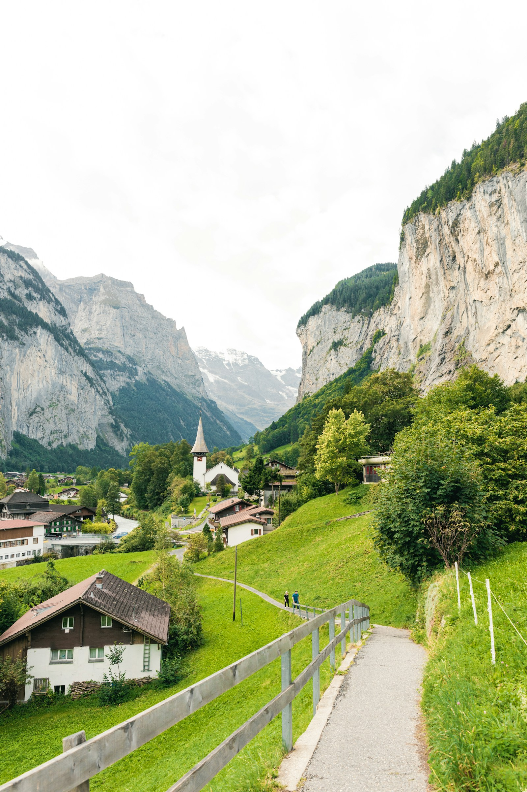

Family Travel Guide
Chapter 15
Family Travel Guide
Overview
Switzerland is an excellent destination for family travel, offering safe environments, child-friendly attractions, and excellent infrastructure. This chapter covers everything you need to plan a memorable family trip.
Family-Friendly Destinations
| Destination | Why It's Great for Families | Top Activity |
|---|---|---|
| Zurich | Zurich Zoo, Swiss National Museum, Lake Zurich playgrounds | Zurich Zoo (CHF 26) |
| Lucerne | Swiss Transport Museum, Lake cruise, Pilatus | Swiss Transport Museum (CHF 32) |
| Interlaken | Outdoor activities, Jungfraujoch, lake cruises | Kunstelsbahn ice skating |
| Grindelwald | First adventure park, hiking trails, sledding | First Flieger zip line |
| Zermatt | Car-free village, Matterhorn Glacier Paradise | Gornergrat Railway |
| Geneva | CERN, Jet d'Eau, lake activities | Exploradysium science museum |
| Montreux | Chillon Castle, lake promenade, mini train | Chillon Castle tour |

The stunning Lauterbrunnen Valley - a family-friendly Swiss destination | Image: Unsplash (Thierry Lemaitre)
Child-Friendly Attractions
- Swiss Transport Museum (Lucerne): Interactive exhibits, simulators, and a planetarium.
- Zurich Zoo: One of Europe's best zoos with the Masoala Rainforest hall.
- Ballenberg Open-Air Museum: Traditional Swiss houses and farm animals near Brienz.
- Jungfraujoch: Snow fun and Ice Palace at the Top of Europe.
- CERN (Geneva): Free interactive science exhibits.
- Chillon Castle (Montreux): Medieval castle exploration for kids.
Family-Friendly Hotels
| City | Hotel | Family Features | Price (CHF/night) |
|---|---|---|---|
| Zurich | Swissotel Zurich | Family rooms, kids' menu | 200-350 |
| Lucerne | Hotel Schweizerhof | Family suites, kids' activities | 250-400 |
| Interlaken | Victoria Jungfrau | Kids' club, family pool | 300-500 |
| Zermatt | Grand Hotel Zermatterhof | Family rooms, kids' programs | 350-600 |
| Geneva | Hotel de la Paix | Interconnecting rooms, kids' menu | 250-450 |
Budget Planning for Family of 4
| Duration | Budget | Mid-Range | Luxury |
|---|---|---|---|
| 7 Days | ₹3,00,000 | ₹5,50,000 | ₹12,00,000 |
| 10 Days | ₹4,00,000 | ₹7,50,000 | ₹17,00,000 |
| 14 Days | ₹5,50,000 | ₹10,00,000 | ₹22,00,000 |
Safety Tips for Families
Family Safety Tips
- Always keep children within sight in crowded areas.
- Write your hotel name and phone number on a card for your children.
- Pack a basic first-aid kit with children's medication.
- Use child seats on mountain railways and cable cars.
- Keep children hydrated and protected from the sun at high altitudes.
- Teach children emergency number 112.